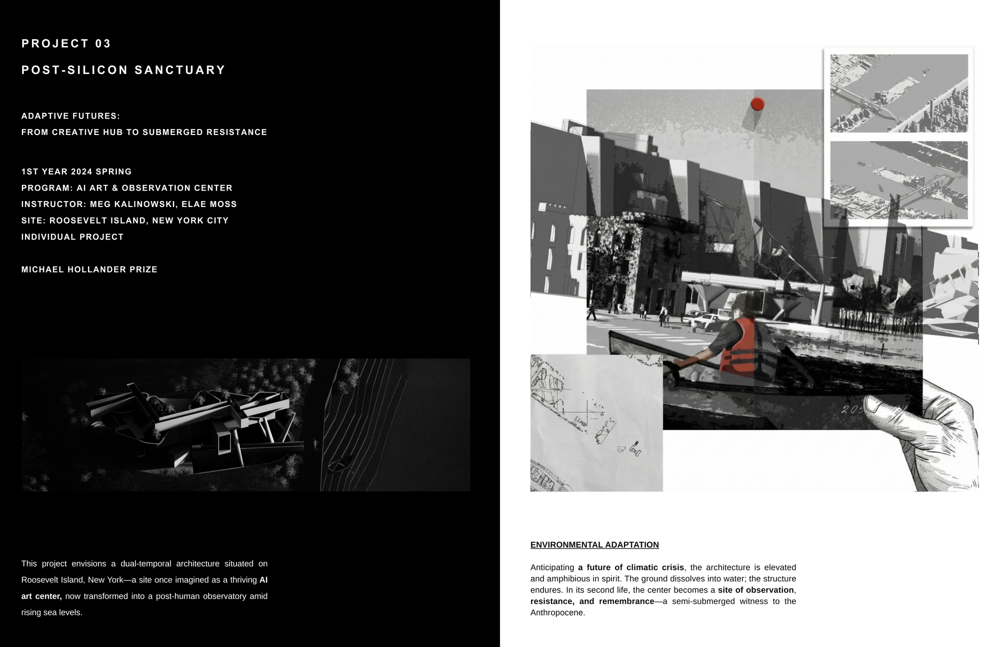
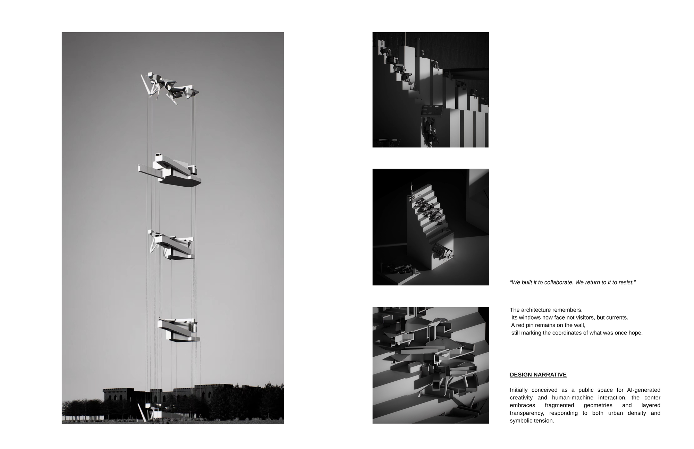
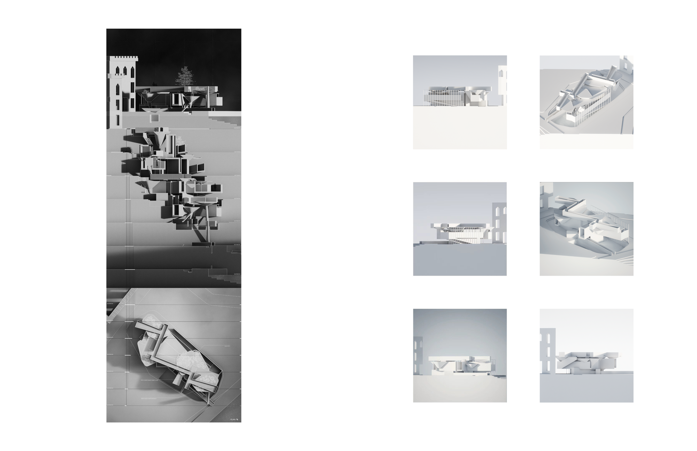
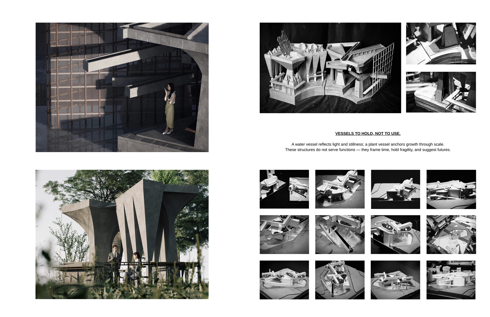
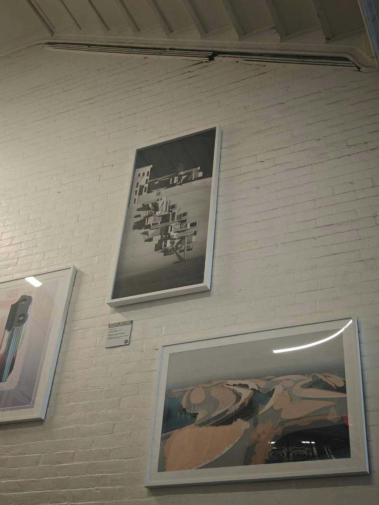

Set on Roosevelt Island, Post-Silicon Sanctuary imagines an AI art and observation center as a dual-temporal architecture: a creative hub today that, anticipating a future of water, is conceived to be elevated and partly submerged — turning the building into a form of resistance and remembrance rather than a static object.
项目位于罗斯福岛，Post-Silicon Sanctuary 将一座 AI 艺术与观测中心设想为“双重时态”的建筑：当下是创意中心，面对未来的水患又被设计为可抬升、部分没入水中——使建筑成为一种抵抗与纪念的姿态，而非静止的物体。
The project was recognized with the Michael Hollander Award for its drawing and representation.
该项目以其绘图与表现获得迈克尔·霍兰德绘图奖。




